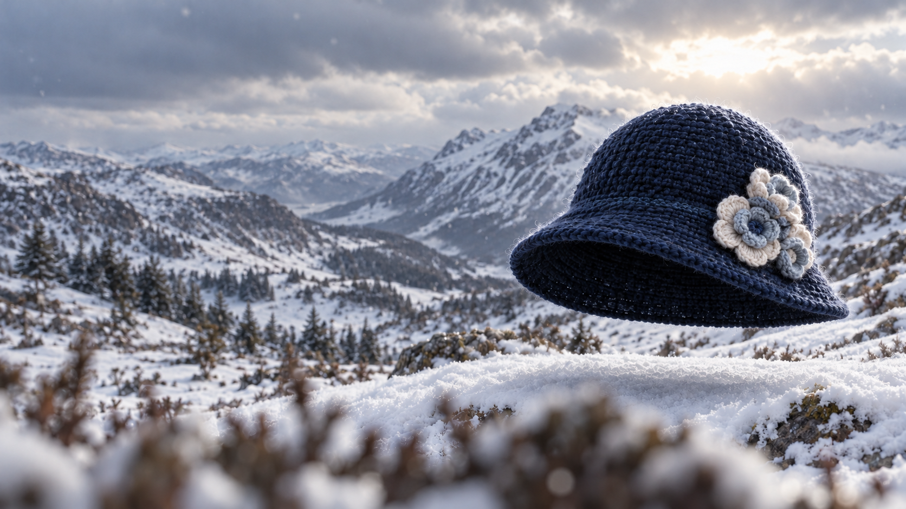
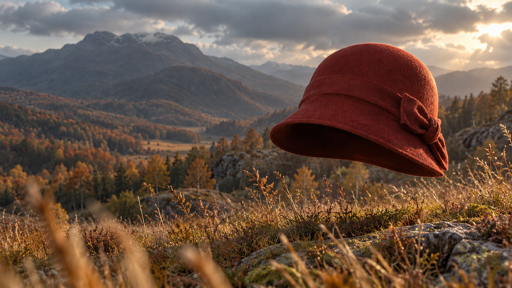
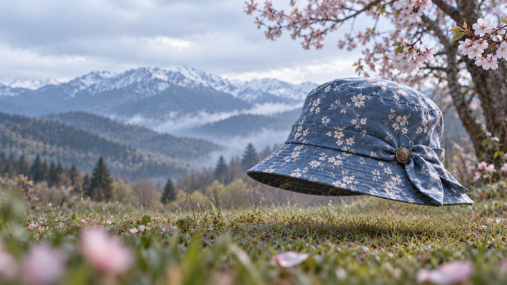

Зима 1 из 4
Холод любит глубокий цвет
На высоте звуки становятся тише, а цвета — глубже. Тёмно-синяя вязка, мягкая линия полей и три светлых цветка — маленькое тепло среди большого снега.
Тёмно-синяя пряжа · Молочные и ледяно-голубые цветы
Дальше: осень
Осень 2 из 4
Осень держит тепло
В долине пахнет сухой травой, и день хочется продлить ещё на одну прогулку. Кирпично-красный фетр, короткий бант и мягкая тень под полями — в цвет уходящего солнца.
Кирпично-красный фетр · Складной бант
Дальше: летоЛето 3 из 4
Полдень у воды
Тёплый песок под ногами, озеро перед глазами и целый день без планов. Светлая соломка пропускает солнце, широкие поля оставляют немного тени, а льняная лента повторяет цвет берега.
Светлая соломка · Льняная лента цвета песка
Дальше: весна
Весна 4 из 4
Весна ещё прохладна
Сад уже расцвёл, но утро ещё хранит горный холод. Приглушённый голубой, мелкие цветы и мягкие складки банта — настроение первых прогулок без спешки.
Голубая ткань с цветочным рисунком · Бронзовая пуговица
Дальше: снова зимаМаршрут не по календарю
Шляпная погода — прогулка по четырём сезонам. Каждая сцена показывает погоду, свет и шляпу, которая с ними в ладу.
Мы идём не по календарю: от зимы к осени, затем к лету и к весне — и снова к зиме. Выберите сезон в меню наверху или нажмите «Дальше» в карточке.